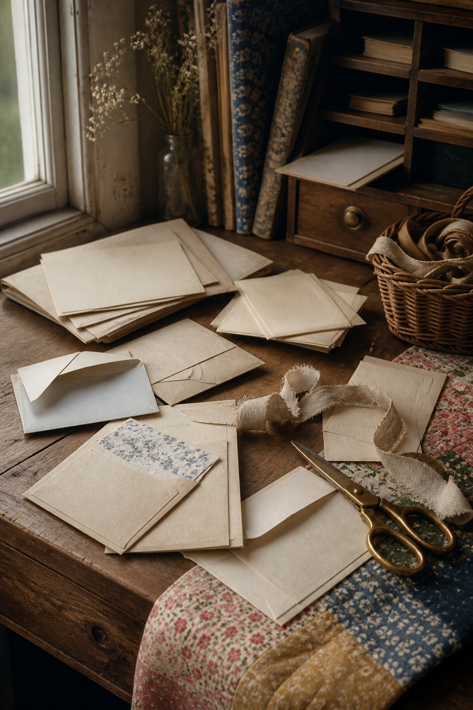
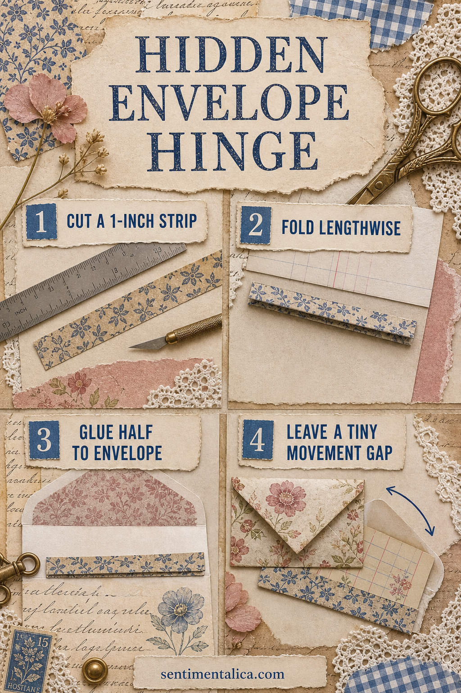
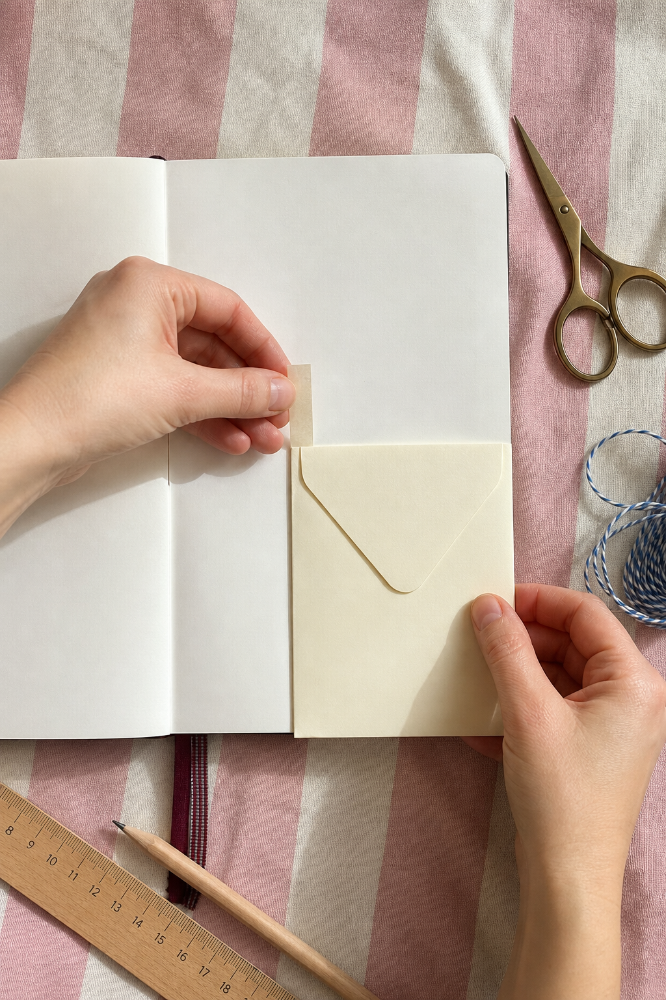

An envelope can become more than a pocket. Add a narrow paper hinge and it opens like a small door, revealing writing space beneath without making the page feel mechanical.


Choose the envelope by weight
Use an envelope that is lighter than the journal page. Heavy card pulls at the binding, while ordinary writing paper moves easily. Place it on the page with at least half an inch of breathing room around the opening edge.
Decide which way it should open
Keep the moving edge away from the spine. A right-hand page usually works well with the hinge on the left, so the envelope swings toward the outer edge. Test the movement before adding adhesive.
Cut a narrow paper hinge
Cut a strip of strong thin paper about one inch wide and slightly shorter than the envelope. Fold it lengthwise. Bone-fold the crease once, but do not make it so sharp that the paper becomes brittle.

Leave a tiny movement gap
Glue one half of the hinge to the envelope back. When attaching the second half to the page, leave the thickness of a fingernail beside the fold. This small gap prevents the hinge from buckling when the envelope contains a card.
Use the hidden area well
Write a private note beneath the envelope, add a pale photograph, or create a simple date block. Keep the hidden layer flat. The reveal feels more satisfying when one meaningful detail appears instead of another dense collage.
Make the pocket contents light
Add one card, photograph copy, or folded note. If the page bends when you lift the envelope, remove weight before reinforcing the hinge. A good movable element should feel effortless in the hand.
Finish with one visual cue
A thread tab, tiny arrow stamp, or contrasting paper corner can show that the envelope opens. Avoid a large closure unless the contents truly need one. Open and close the piece ten times, then press it flat beneath a book after the glue dries.
The finished hinge should almost disappear. What remains is the pleasure of opening a familiar object and finding a second little story beneath it.
Image note: Some visuals in this article were created with AI and curated by Sentimentalica.